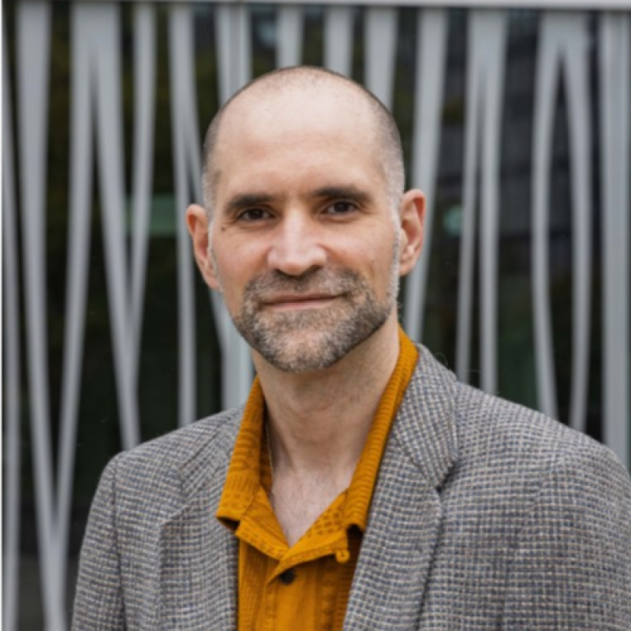

Nikos Karaiskos
Senior Scientist · Computational Biology · Single-cell & Spatial Transcriptomics
Hi there! I’m a theoretical physicist turned computational biologist, currently working as a Senior Scientist at the Berlin Institute for Medical Systems Biology of the Max Delbrück Center.
My work is mostly focused on developing computational tools and software for single-cell and spatial transcriptomics data — from reconstructing tissues in space (novoSpaRc) to high-resolution 3D spatial transcriptomics (Open-ST) and ultrafast, reference-free sequence discovery (Nature 2026).
I’m also the co-founder of Malva, a platform for ultra-fast search and analysis of spatial and single-cell omics data.
Happy to hear about collaborations, spatial and single-cell omics projects, or Malva.
